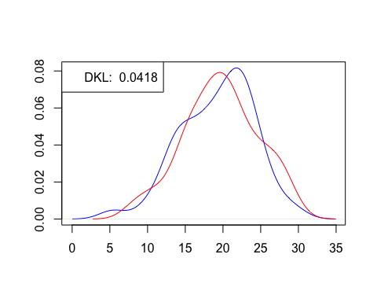
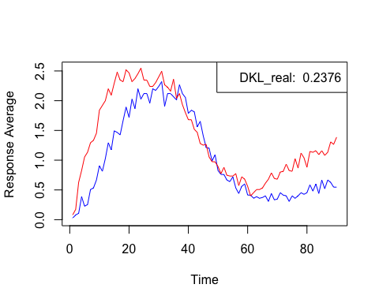

The Kullback-Leibler divergence, a fundamental concept in information theory and statistics, provides a useful framework for quantifying the difference between two probability distributions. In the field of behavioral analysis, comparing distributions between different operant schedules is paramount for gaining insights into various phenomena, from decision-making processes to learning dynamics. By capturing the relative entropy between distributions, the Kullback-Leibler divergence offers a nuanced understanding of behavioral patterns.
Whether investigating the effectiveness of interventions, assessing the impact of environmental variables, or examining the fidelity of computational models to empirical data, the Kullback-Leibler divergence serves as a versatile tool for comparing distributions and evaluating hypotheses. Its application extends across diverse domains within behavioral science, offering researchers a robust methodology for discerning patterns, elucidating underlying mechanisms, and refining theoretical frameworks.
The Kullback-Leibler divergence formula for continuous variables can be expressed as:
\[ {D_{KL}(P||Q) = \int_{-\infty}^{\infty} p(x) \log \frac{p(x)}{q(x)} dx} \]
Where \(p(x)\) and \(q(x)\) are the probability density of the distributions \(P\) and \(Q\), respectively.
Here we implement the KL_div() function which takes two
numeric distributions (\(P\) and \(Q\)) and the upper and lower limits for
integration, returning a numeric value for the \(D_{KL}\).
The function takes the following parameters:
x a numeric vector for the distribution \(P\).y a numeric vector for the distribution \(Q\).from_a a numeric value for the lower limit of the
integration.to_b a numeric value for the upper limit of the
integration.First let’s generate and plot two random normal distributions with 100 elements and calculate the \(D_{KL}\):

Now let’s use real data from two different subjects performance during 5 Peak Interval sessions:
data("gauss_example_1", package = "YEAB", envir = environment())
data("gauss_example_2", package = "YEAB", envir = environment())
P <- gauss_example_1
Q <- gauss_example_2
DKL_real <- KL_div(P$Response_Average, Q$Response_Average, -Inf, Inf)
print(DKL_real)## [1] 0.237648